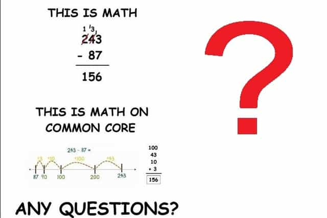

Michael is the author of Staying Married in a Degenerate Age. Follow him on Twitter or Facebook. You can read more of his writing at Honor and Daring.


Now that it is presidential election season, we constantly hear the politicians tell us how broken the US education system is. One of the solutions that is supported by the Democrats and some of the Republicans is “Common Core.” Common Core is a national standard that dictates what children in grades K-12 should know at the end of each grade. The standard was announced in 2009 and it has been adopted by almost every state.
While the idea behind Common Core seems reasonable, in practice it is just one more heavy-handed government social engineering project on America’s children. Here are some of the reasons you should oppose Common Core even if you don’t happen to have any children of your own:
The US spends more per pupil on education than any other country, yet the US trails continues to trail other developed countries in virtually every category.
Politicians and educational “experts” put the blame on various things: teachers, parents, teacher unions, and lack of funding for poor schools. They all agree that we need higher standards and more testing.
But the elephant in the room that all these solutions are ignoring is the fact that blacks and Hispanics score lower on standardized tests than white students. The less white the US becomes, the worse its performance gets in comparison to other nations. Linsday Cook wrote in US News and World Report:
American education is rife with problems, starting with the gaping differences between white students and students of color: More than 60 years after Brown vs. Board of Education, school systems in the United States are separate and unequal. By 2022, the number of Hispanic students in public elementary and secondary schools is projected to grow 33 percent from the 2011 numbers. The number of multi-racial students is expected to grow 44 percent.
As the percentage of white students in our education shrinks and the percentage of students of color grow, the U.S. will be left with an education system that doesn’t serve the majority of its children properly; the gaps in education will prove especially problematic.
Until Americans are willing to have an honest conversation about the differences between various groups of people we are going to waste money implementing various silver bullets to fix the wrong problem. Because Common Core does nothing to address this issue, it is destined to be another expensive debacle, like all prior attempts to fix US education.

In theory, national educational standards shouldn’t be controversial. After all, the federal government is supposed to want the best for its citizens.
But we are all aware that it is no longer the case. The Obama Administration has been notorious in using government power to reward friends and punish enemies. For example, it appears that the IRS targeted Tea Party groups for special scrutiny. And the Administration has stoked the fires of racial hatred by exploiting events such as the shootings of Trayvon Martin and Michael Brown. The Republicans are little better. The Trump candidacy has exposed how deeply the Republican Party is beholden to a small donor class whose interests often conflict with those of middle class Americans.
Keeping Common Core in place allows a small group of people in the federal government to control the nation’s schools. It doesn’t take a lot of imagination to see how this type of centralized control can be used to impose politically-favored ideas onto our children.

For whatever reason, American teachers and administrators are especially gullible to jumping on the latest fad. Educators are constantly trying to find that silver bullet that will make all the children above average. It could be a new way of teaching math, a new technology like iPads, or different ways of organizing classrooms.
Because of this insatiable desire for novelty, there is no shortage of private companies who line up to peddle their wares as the latest in making cognitively challenged children into the next Einstein. It’s a big, lucrative business. Common Core is no different. Because it calls for incessant testing, test publishing companies like Pearson are big proponents of Common Core. They are getting a huge windfall.
It is not just test publishing companies. There are all sorts of institutions that are lining up at the Common Core trough. Politicians are also poised to benefit. Presidential candidate Jeb Bush started the Foundation for Educational Excellence, which advocates for the adoption of Common Core. It turns out that the foundation has been the beneficiary of Gates Foundation dollars for their advocacy. Americans should be skeptical of any expensive new educational program, especially if it has dubious results.
One of the benefits of the US federal system is that states can conduct experiments without affecting the rest of the country. Colorado’s legalization of pot is one such experiment. The rest of the country can observe what is happening in Colorado before choosing to legalize or not.
It is the same for education. Several years ago, California decided it was going to try to teach reading without using phonics. It turned out to be an abysmal failure, but it only affected California students. Then entire country did not have to pay the price for some politician’s hairbrained ideas. This was not the case with Common Core. It was foisted upon the whole country with the exception of four states. As usual, the federal government offered billions of dollars of grant money for states that adopted the new standards—before it had a chance to be tested in a small, controlled environment.
Common Core advocates say that the program was “internationally benchmarked.” It sounds impressive. Unfortunately, what they mean is that the creators of Common Core only looked at the standards of other countries. It does not mean that they compared their actual results to the results of other countries.
Common Core was an ambitious creation, but there is no evidence that it will have better results than what was in place before. In fact, it may result in poorer results. Putting an untested program into place in the entire country was a reckless decision.

One of the unstated goals of the developers of Common Core was to better prepare students to be corporate office drones. So they surveyed CEOs at various companies about the various qualities that a good corporate drone would possess. The interesting thing is that this resulted in Common Core dropping parts of the math curriculum including “calculus and pre-calculus, about half of Algebra II, and parts of geometry.”
Critics pointed out that this would make college-bound students less prepared to enter a university STEM program. It turns out that preparing students for STEM was never the purpose of Common Core. Rather, it appears that Common Core is not aiming at students who are in the upper tail of the bell curve. Its purpose is to prepare students for “community college, university, technical/vocational program[s], apprenticeship[s], or significant on-the-job training.”
This probably will not hurt intelligent students in wealthy school districts. Those districts will continue to offer these courses. However, poor school districts may forego offering the higher math courses and still be considered Common Core compliant. Thus, highly intelligent students in poor districts may be cheated out of adequate college preparation.
There may be some beneficial aspects to the Common Core standards, but the corrupt nature of US politics, the untested nature of the program, and Americans’ unwillingness to confront unpleasant truths make Common Core a bad idea at the present time.
Read More: The 7 Most Common Lies Women Tell In A Relationship